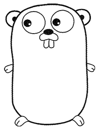

一、Go的起源
Go语言的所有设计者都说，设计Go语言是因为 C++ 给他们带来了挫败感。在 Google I/O 2012 的 Go 设计小组见面会上，Rob Pike 是这样说的： 我们做了大量的 C++ 开发，厌烦了等待编译完成，尽管这是玩笑，但在很大程度上来说也是事实。
Go 语言起源 2007 年，并于 2009 年正式对外发布。它从 2009 年 9 月 21 日开始作为谷歌公司 20% 兼职项目，即相关员工利用 20% 的空余时间来参与 Go 语言的研发工作。
二、Go的创始人
他们都是计算机科学领域的重量级人物。
1、Ken Thompson
贝尔实验室 Unix 团队成员，C语言、Unix 和 Plan 9 的创始人之一，在 20 世纪 70 年代，设计并实现了最初的 UNIX 操作系统，仅从这一点说，他对计算机科学的贡献怎么强调都不过分。他还与 Rob Pike 合作设计了 UTF-8 编码方案。
2、Rob Pike
Go语言项目总负责人，贝尔实验室 Unix 团队成员，除帮助设计 UTF-8 外，还帮助开发了分布式多用户操作系统 Plan 9、Inferno 操作系统和 Limbo 编程语言，并与人合著了《The Unix Programming Environment》，对 UNIX 的设计理念做了正统的阐述。
3、Robert Griesemer
就职于 Google，参与开发 Java HotSpot 虚拟机，对语言设计有深入的认识，并负责 Chrome 浏览器和 Node.js 使用的 Google V8 JavaScript 引擎的代码生成部分。
三、Go的吉详物
其实是一种英文名为gopher的小动物，中文叫囊地鼠。由Go 设计者之一 Rob Pike 的妻子Renee French 设计

四、Go语言的特点
1、Go语言是编译型语言。这不同于 Python、Ruby 和 JavaScript 等语言，它们不包含编译步骤。
2、Go 自带了编译器，因此无须单独安装编译器。
3、Go语言具有“部署简单、并发性好、语言设计良好、执行性能好”等优势。它起源于 2007 年，并在 2009 年正式对外发布。
4、Go语言的主要目标是“兼具 Python 等动态语言的开发速度和 C/C++ 等编译型语言的性能与安全性”。
5、Go语言它不但能让你访问底层操作系统，还提供了强大的原生网络编程和并发编程支持。很多知名的开源项目用Go实现，例如：Docker、Go-Ethereum、Thrraform 和 Kubernetes。
6、Go语言是“互联网时代的C语言”。Go 从C语言继承了相似的表达式语法、控制流结构、基础数据类型、调用参数传值、指针等很多思想，还有C语言一直所看中的编译后机器码的运行效率以及和现有操作系统的无缝适配。
7、Go语言没有类和继承的概念，它和 Java 或 C# 看起来并不相同。但是它通过接口（interface）的概念来实现多态性。
8、Go语言有一个清晰易懂的轻量级类型系统，在类型之间也没有层级之说。因此可以说Go语言是一门混合型的语言。
五、语言特性
1、自动垃圾回收
2、更丰富的内置类型
3、函数多返回值
4、错误处理
5、匿名函数和闭包
6、类型和接口
7、并发编程
8、反射
9、语言交互性